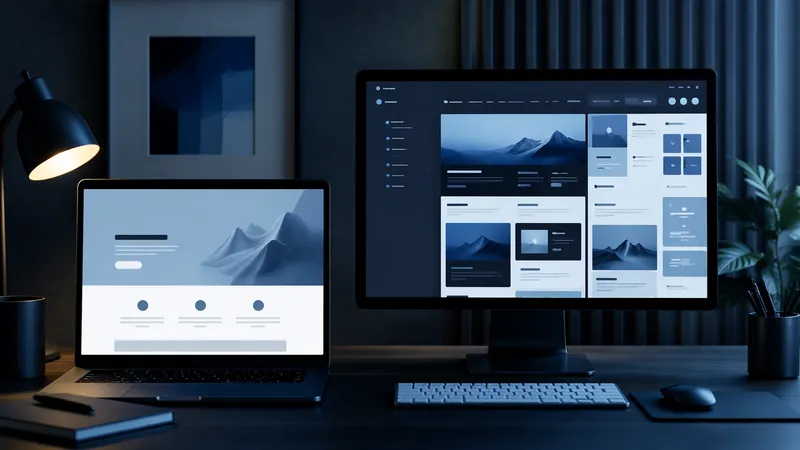

Landingpage oder Website?
Was bei Meta Ads wirklich konvertiert.

„Reicht unsere Website nicht auch für die Kampagne?“ Diese Frage hören wir in fast jedem Erstgespräch. Die kurze Antwort: Landingpage vs. Website ist meist kein Gleichstand. Für Meta Ads gewinnt fast immer die fokussierte Landingpage, und wir zeigen dir, warum.
Die Frage, die jeder Kunde stellt
Eine Unternehmens-Website ist bereits da, sieht professionell aus und hat Geld gekostet. Der Wunsch, sie auch für Werbung zu nutzen, ist verständlich. Das Problem: Eine Website ist für Besucher gebaut, die informieren und vergleichen wollen. Eine Meta-Ad-Kampagne bringt aber Besucher, die gerade erst neugierig geworden sind, meist mitten im Feed, ohne Kaufabsicht. Diese zwei Besuchertypen brauchen unterschiedliche Seiten.
Der entscheidende Unterschied
Eine Website hat viele Ziele gleichzeitig: Navigation, Über uns, Leistungen, Blog, Kontakt. Jeder zusätzliche Menüpunkt ist ein Ausgang, durch den ein Interessent verschwinden kann, bevor er sich meldet. Eine Landingpage hat genau ein Ziel: den Besucher zur Anfrage zu bringen. Kein Menü, keine Ablenkung, eine klare Story von oben bis unten.
| Kriterium | Landingpage | Website |
|---|---|---|
| Fokus | Ein Angebot, ein Ziel | Viele Themen parallel |
| Navigation | Keine oder minimal | Vollständiges Menü |
| Botschaft | Exakt auf die Anzeige abgestimmt | Allgemein für alle Besucher |
| Ladezeit | Schlank, meist eine Seite | Mehrere Unterseiten, oft schwerer |
| Einsatzzweck | Bezahlter Traffic, Kampagnen | Marke, SEO, Bestandskunden |
So baust du eine Landingpage, die wirklich konvertiert
Ein Versprechen oben: Headline und Bild greifen exakt das Versprechen aus der Anzeige auf, ohne Bruch im Wording.
Nutzen vor Funktionen: Zeig, was sich für den Besucher ändert, nicht nur was du anbietest.
Vertrauen einbauen: Kundenstimmen, Zertifikate oder Zahlen direkt sichtbar, ohne Scrollen zu erzwingen.
Ein Call-to-Action: Nur ein Ziel pro Seite, mehrfach wiederholt, nie zwei konkurrierende Buttons.
Wann die Website trotzdem gebraucht wird
Eine Landingpage ersetzt die Website nicht. Für organischen Traffic über Google, für Bestandskunden, die mehr über dich erfahren wollen, und fürs Vertrauen bei größeren Investitionen bleibt die Website wichtig. Interessenten, die vor einer Anfrage noch googeln, sollen dort finden, was sie suchen.
Fazit: Kombination statt Entweder-Oder
Die beste Lösung ist selten Landingpage oder Website, sondern beides richtig eingesetzt: Die Kampagne führt auf eine schlanke Landingpage mit einem Ziel, die Website bleibt daneben bestehen für alle anderen Kanäle. Wer diesen Unterschied ignoriert und Meta Ads direkt auf die Website schickt, zahlt für Klicks, die im Menü verloren gehen, statt in der Anfrage zu landen.
Deine Kampagne braucht die richtige Seite dahinter?
Lass uns unverbindlich auf dein Angebot und deinen Funnel schauen.